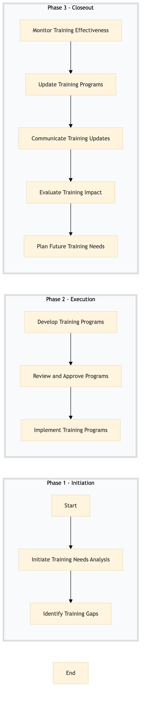

| Role | Steps |
|---|---|
| Learning & Development Manager | 1.1 1.2 3.1 3.2 3.4 |
| Learning & Development Specialist | 2.1 2.2 3.3 |
| Human Resources Director | 3.5 3.6 |
| Step | Name | Role | System | Input | Output | KPI | Dec? | Exc? | Pain Point / Risk |
|---|---|---|---|---|---|---|---|---|---|
| 1.1 | Initiate Training Needs Analysis | Learning & Development Manager | Oracle OPERA Cloud | Annual performance review data, employee feedback forms | Training Needs Analysis Report | Completion within 2 weeks | N | Y | Data inconsistency across different departments |
| 1.2 | Identify Training Gaps | Learning & Development Manager | Oracle OPERA Cloud, Workday HCM | Training Needs Analysis Report | Training Gap Identification Matrix | Completion within 1 week | N | Y | Lack of standardized performance metrics |
| 2.1 | Develop Training Programs | Learning & Development Specialist | Oracle OPERA Cloud, Microsoft Power BI | Training Gap Identification Matrix | Training Program Proposals | Completion within 3 weeks | Y | N | Resource allocation for training materials |
| 2.2 | Review and Approve Programs | Human Resources Director | Workday HCM, Microsoft Power BI | Training Program Proposals | Approved Training Programs | Completion within 1 week | N | Y | Budget constraints for training initiatives |
| 3.1 | Implement Training Programs | Learning & Development Specialist | Oracle OPERA Cloud, Book4Time | Approved Training Programs | Training Schedule and Materials | Completion within 2 weeks | N | Y | Coordination with multiple departments for scheduling |
| 3.2 | Monitor Training Effectiveness | Learning & Development Manager | Oracle OPERA Cloud, Microsoft Power BI | Training Schedule and Materials | Training Effectiveness Report | Completion within 1 month post-training | Y | N | Measuring the impact of training on employee performance |
| 3.3 | Update Training Programs | Learning & Development Specialist | Oracle OPERA Cloud, Microsoft Power BI | Training Effectiveness Report | Updated Training Programs | Completion within 2 weeks | N | Y | Keeping training content relevant to evolving business needs |
| 3.4 | Communicate Training Updates | Learning & Development Manager | Oracle OPERA Cloud, Marriott Bonvoy CRM | Updated Training Programs | Training Update Notifications | Completion within 1 week | N | Y | Ensuring all employees are aware of training changes |
| 3.5 | Evaluate Training Impact | Human Resources Director | Oracle OPERA Cloud, Microsoft Power BI | Training Update Notifications | Training Impact Evaluation Report | Completion within 1 month post-updates | Y | N | Assessing the long-term benefits of training programs |
| 3.6 | Plan Future Training Needs | Learning & Development Manager | Oracle OPERA Cloud, Microsoft Power BI | Training Impact Evaluation Report | Future Training Needs Plan | Completion within 2 weeks | N | Y | Predicting future skill gaps based on business trends |
A structured process document for HR-LR-01 — Training Needs Analysis at a Marriott full-service hotel. This process involves identifying training needs based on employee performance data and feedback.